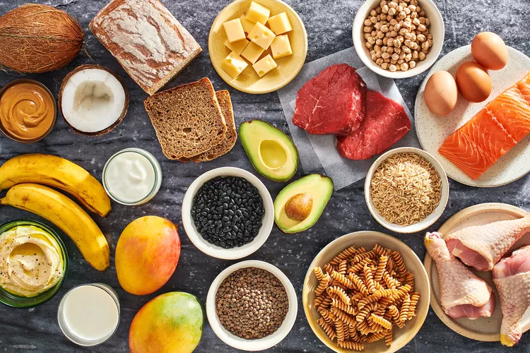
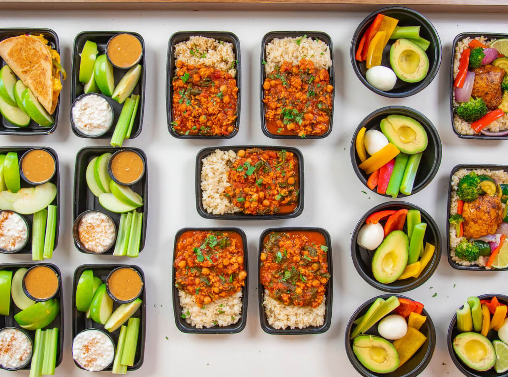

Diet Plan for Body Building

Understand the Science Behind Body building diet
The science behind a bodybuilding diet is intricately focused on optimizing nutrient intake to facilitate
muscle growth, repair, and performance enhancement. Key elements of this dietary approach include
prioritizing protein intake to support muscle protein synthesis and recovery, typically ranging from 1.6 to
2.2 grams per kilogram of body weight daily. Distributing protein consumption evenly throughout the day and
strategically timing protein-rich meals before and after workouts enhances muscle repair and growth.
Carbohydrates serve as the primary energy source for workouts, with an emphasis on complex carbohydrates
from sources like whole grains, fruits, and vegetables to sustain energy levels and replenish glycogen
stores. Healthy fats are essential for hormone production and overall health, with inclusion of sources like
avocados, nuts, and olive oil.
Achieving a caloric surplus, while prioritizing nutrient-dense foods,
supports muscle growth while minimizing fat gain. Adequate intake of micronutrients from a diverse array of
foods is crucial for overall health and performance. Hydration is essential for maintaining performance and
facilitating recovery
Body Bulding Diet Plan
The most abundant macronutrient in a bodybuilder’s diet plan at all phases was carbohydrates from fruits,
whole grains and vegetables.
The same study noted that protein from white meat, dairy, nuts, and seafood was the second most abundant
macronutrient in a muscle building diet. 1
Muscle Building Diet Plan will vary from person to person, depending on biological gender, size, and goals.
Diet Plan
Day 1 - Body building Diet Plan Chart
| Day 1 |
Diet Chat |
| 6:30 AM |
Cucumber Detox Water (1 glass) and
Oats Porridge in Skimmed Milk (1 bowl) |
| 8:00 AM |
Scrambled eggs with spinach and cheese, whole-grain toast with avocado. |
| 2:00 PM |
Grilled chicken breast with quinoa and roasted vegetables. |
| 4:00 PM |
Apple slices with almond butter. |
| 5:30 PM |
Cut Fruits (1 cup) Buttermilk (1 glass) |
| 8:50 PM |
Mixed Vegetable Salad (1 katori)
and Dal (1 katori) Lauki Sabzi (1 katori) |
| 9:00 PM |
Roti (1 roti/chapati) |
Day 2 -Body building Diet Plan Chart
| Day 2 |
Diet Chat |
| 6:30 AM |
Protein smoothie with banana, spinach, almond milk, and protein powder. |
| 8:00 AM |
Curd (1.5 katori) Mixed Vegetable Stuffed Roti (2 pieces) |
| 2:00 PM |
Mixed Vegetable Salad (1 katori) And
Lentil Curry (0.75 bowl) Methi Rice (0.5 katori) |
| 4:00 PM |
Apple (0.5 small (2-3/4″ dia)) Buttermilk (1 glass) |
| 5:30 PM |
Coffee with Milk and Less Sugar (0.5 tea cup) |
| 8:50 PM |
Mixed Vegetable Salad (1 katori) And
Sauteed Vegetables with Paneer (1 katori) Roti (1 roti/chapati)
|
| 9:00 PM |
Trail mix with nuts, dried fruits, and dark chocolate. |
Day 3 - Body building Diet Plan Chart
| Day 3 |
Diet Chat |
| 6:30 AM |
Cucumber Detox Water (1 glass) |
| 8:00 AM |
Skim Milk Yoghurt (1 cup (8 fl oz)) Multigrain Toast (2 toast) |
| 2:00 PM |
Mixed Vegetable Salad (1 katori)
And Sauteed Vegetables with Paneer (1 katori) Roti (1 roti/chapati) |
| 4:00 PM |
Banana (0.5 small (6″ to 6-7/8″ long)) Buttermilk (1 glass)
And Green Chutney (2 tablespoon) |
| 5:30 PM |
Tea with Less Sugar and Milk (1 teacup) |
| 8:50 PM |
Mixed Vegetable Salad (1 katori) |
| 9:00 PM |
Lentil Curry (0.75 bowl) Methi Rice (0.5 katori) |
Day 4 - Body building Diet Plan Chart
| Day 4 |
Diet Chat |
| 6:30 AM |
Cucumber Detox Water (1 glass)
And Fruit and Nuts Yogurt Smoothie (0.75 glass) |
| 8:00 AM |
Egg Omelette (1 serve(one egg)) |
| 2:00 PM |
Skimmed Milk Paneer (100 grams)
Mixed Vegetable Salad (1 katori)
And Green Gram Whole Dal Cooked |
| 4:00 PM |
Bhindi sabzi (1 katori) and Roti (1 roti/chapati) and Orange (1 fruit (2-5/8″ dia)) Buttermilk
(1 glass) |
| 5:30 PM |
Coffee with Milk and Less Sugar (0.5 teacup) |
| 8:50 PM |
Mixed Vegetable Salad (1 katori) |
| 9:00 PM |
Palak Chole (1 bowl) Steamed Rice (0.5 katori) |
Day 5 - Body building Diet Plan Chart
| Day 5 |
Diet Chat |
| 6:30 AM |
Cucumber Detox Water (1 glass) |
| 8:00 AM |
Skimmed Milk (1 glass) Peas Poha (1.5 katori) |
| 2:00 PM |
Skimmed Milk Paneer (100 grams)
Low Fat Paneer Curry (1.5 katori) Missi Roti (1 roti) |
| 4:00 PM |
Mixed Vegetable Salad (1 katori)
Papaya (1 cup 1″ pieces) Buttermilk (1 glass)
|
| 5:30 PM |
Tea with Less Sugar and Milk (1 teacup) |
| 8:50 PM |
Mixed Vegetable Salad (1 katori)
Curd (1.5 katori) Aloo Baingan Tamatar Ki Sabzi (1 katori) |
| 9:00 PM |
Roti (1 roti/chapati) |
Day 6 - Body building Diet Plan Chart
| Day 6 |
Diet Chat |
| 6:30 AM |
Cucumber Detox Water (1 glass) |
| 8:00 AM |
Mixed Sambar (1 bowl) Idli (2 idli)
Skimmed Milk Paneer (100 grams) |
| 2:00 PM |
Mixed Vegetable Salad (1 katori)
And Curd (1.5 katori) Aloo Baingan Tamatar Ki Sabzi (1 katori)
Roti (1 roti/chapati) |
| 4:00 PM |
Coffee with Milk and Less Sugar (0.5 tea cup) |
| 5:30 PM |
Cut Fruits (1 cup) Buttermilk (1 glass) |
| 8:50 PM |
Mixed Vegetable Salad (1 katori)
and Green Gram Whole Dal Cooked (1 katori)Bhindi sabzi (1 katori) |
| 9:00 PM |
Roti (1 roti/chapati) |
Day 7 - Body building Diet Plan Chart
| Day 7 |
Diet Chat |
| 6:30 AM |
1 medium banana
2 Tbsp. peanut butter |
| 8:00 AM |
plain Greek yogurt
½ cup blueberries
1 Tbsp. honey |
| 2:00 PM |
Mixed Vegetable Salad (1 katori)
and Palak Chole (1 bowl) Steamed Rice (0.5 katori) |
| 4:00 PM |
Apple(0.5 small (2-3/4″ dia)) Buttermilk (1 glass) |
| 5:30 PM |
Tea with Less Sugar and Milk (1 teacup) |
| 8:50 PM |
Mixed Vegetable Salad (1 katori) |
| 9:00 PM |
Low Fat Paneer Curry (1 katori) Missi Roti (1 roti) |

Conclusion
In conclusion, a well-planned diet is essential for achieving weight gain goals in a healthy and sustainable
manner. This 7-day diet plan provides a variety of nutrient-dense foods rich in proteins, healthy fats,
complex carbohydrates, vitamins, and minerals to support muscle growth and overall health. By incorporating
a calorie surplus, regular meals and snacks, and balanced macronutrients, individuals can effectively
increase their calorie intake to promote weight gain. Remember to adjust portion sizes according to
individual calorie needs and consult with a healthcare professional or registered dietitian if needed. With
consistency, patience, and adherence to a balanced diet, achieving weight gain objectives is achievable
while promoting overall well-being.